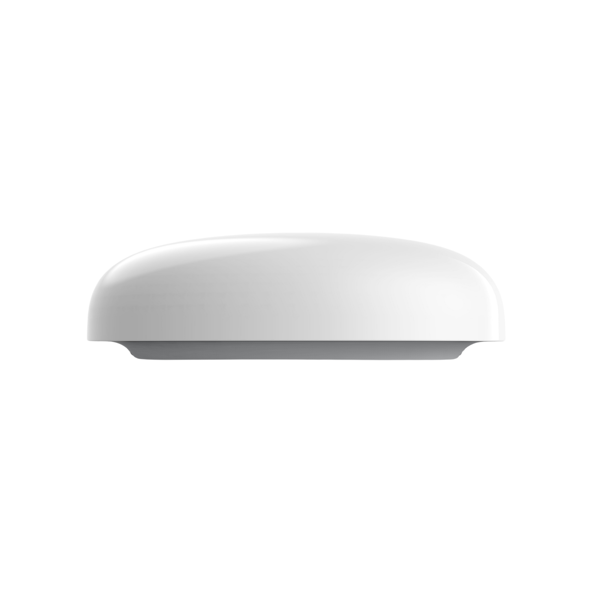
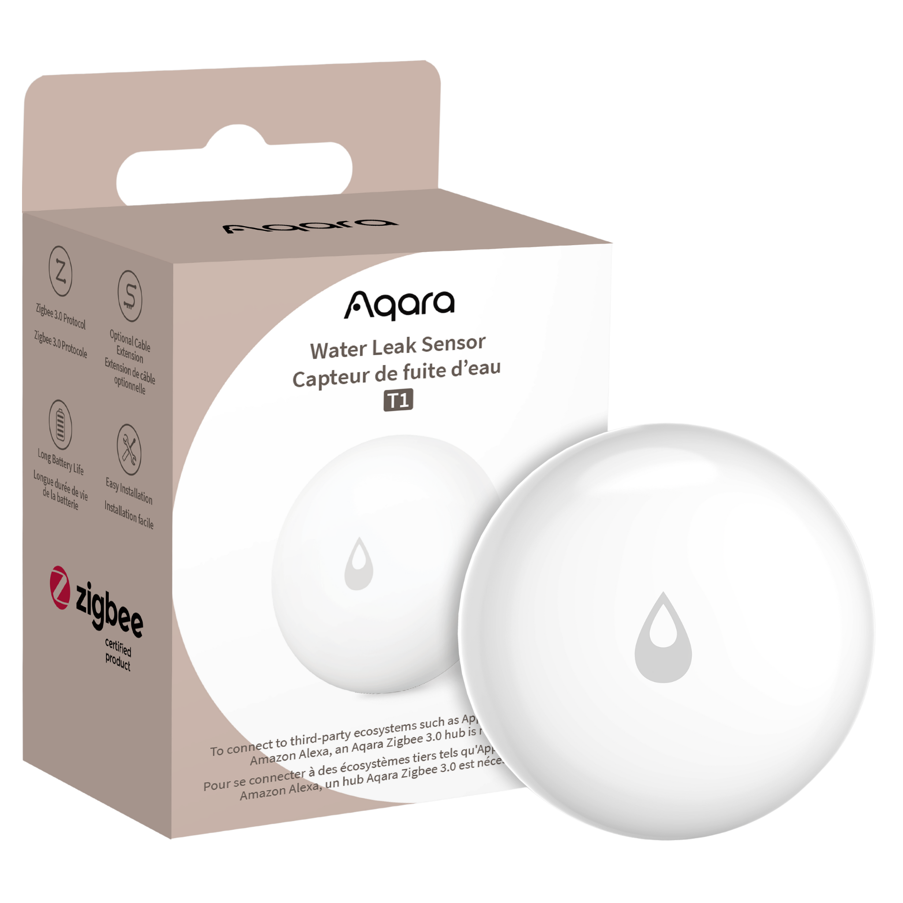
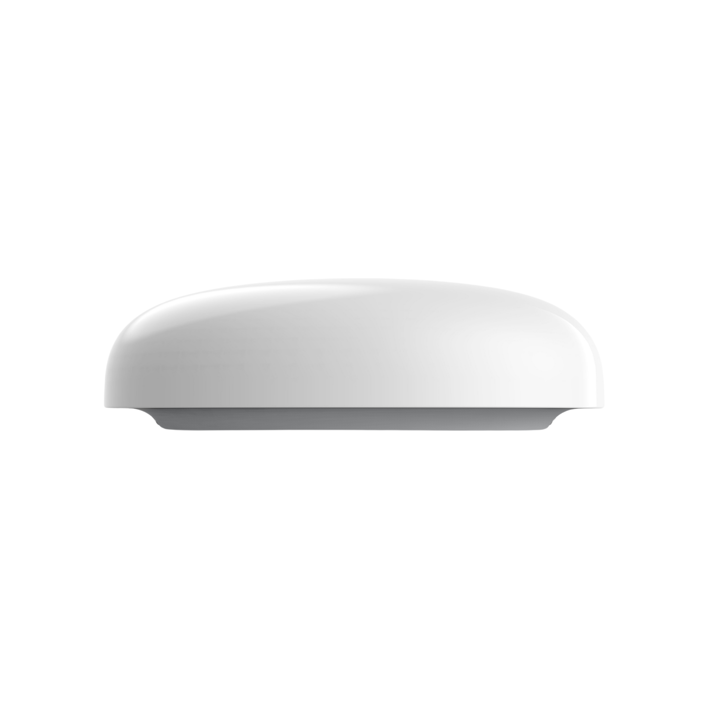
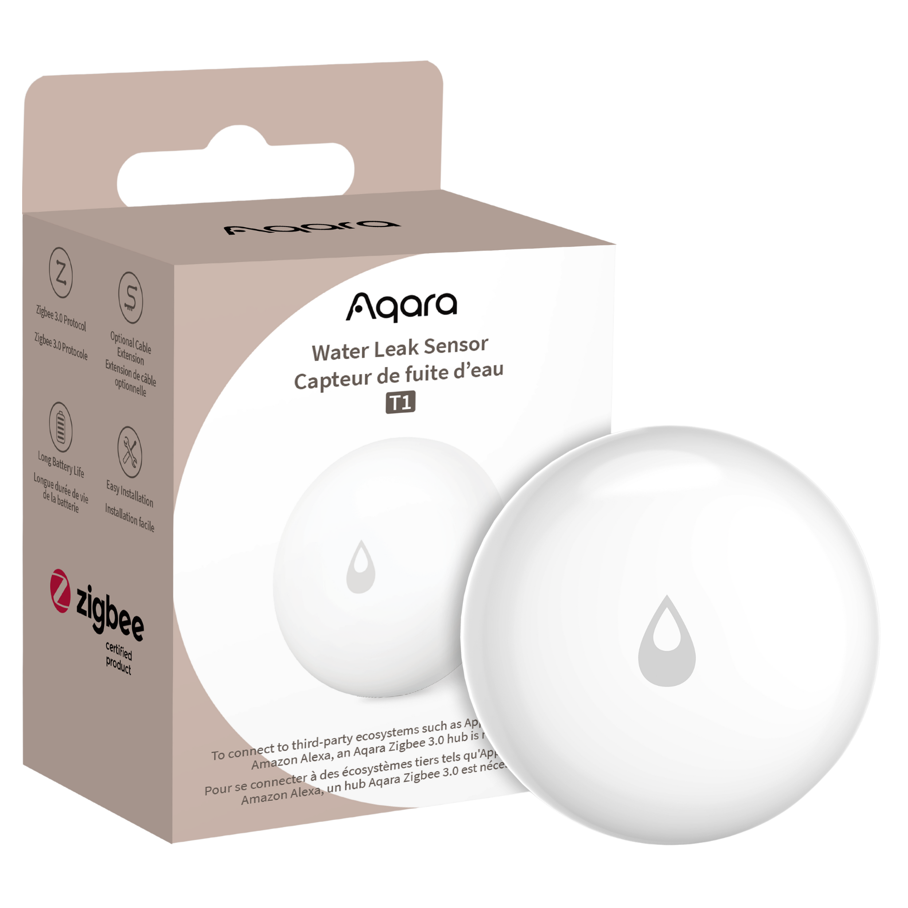

Water Leak Sensor T1
- Protect your home with the Aqara Water Leak Sensor T1. Detect leaks early, prevent damage, and get instant alerts via Aqara Home app. Durable & long-lasting.
Historic Data Capture |
No Tools Needed |
Real-Time Alert and Notification |
2-Year Battery Life |

 



Product Info
Description
Compact, sturdy and smart, the Water Leak Sensor T1 detects even the slightest moisture – as little as 0.5 mm – and immediately alerts you via the Aqara Home app or hub alarm, helping prevent costly water damage. Its IP67 rating ensures reliable performance in humid, dusty environments.
Powered by a single CR2032 battery with up to two years' life and low-battery warnings, this sensor offers hassle-free, long-lasting protection. It uses Zigbee 3.0 for secure, low-power wireless connection—just pair it with your Aqara hub for seamless integration into Apple HomeKit, Google Assistant, Amazon Alexa, SmartThings, IFTTT and more.
With its sleek, compact design, it's easy to place anywhere—from under sinks to laundry rooms—offering reliable water-leak monitoring at every critical spot.
Key Features
- Instant Alerts for Peace of Mind: When water reaches just 0.5 mm, the Aqara Water Leak Sensor instantly triggers the Hub alarm and sends a push notification to your phone.
- Reliable in Any Environment: With an IP67 dustproof and waterproof rating, the sensor is built to perform in humid or dusty spaces.
- Compact, Elegant Design: Its sleek form allows it to fit discreetly anywhere you need protection.
- Smart Control with Apple Home: Seamlessly works with other HomeKit-enabled devices via the Apple Home app, making everyday life easier.
- Aqara Home Automations: Link with other Aqara products for tailored protection—for example, automatically shutting off a water valve through a Smart Plug the moment a leak is detected.*
- Energy-Efficient & Durable: Made with anti-UV materials to resist discolouration, while its long-lasting battery provides up to two years of reliable use.
- OTA Updates: Supports over-the-air updates, improving stability and functionality
Note:
* This scene requires a solenoid water valve and an Aqara Smart Plug.
Specifications
| Model | WL-S02D |
| Colour | White |
| Battery | CR2032 |
| Wireless Protocol | Zigbee 3.0 |
| Dimensions | 50 x 50 x 15 mm (1.97 x 1.97 x 0.59 in.) |
| Operating Temperature | 0 °C ~ 55 °C (14 °F ~ 131 °F) |
| Operating Humidity | 0 – 100%RH |
| What's in the Box | Water Leak Sensor T1 x1, User Manual x1 |
Automations and Complementary Products
Click a product image to go to its page details
Scene: Main Line Auto-Shutoff:
Stop leaks at the source. The moment moisture is detected, your main valve closes, the hub sounds a siren, and you get an instant alert—before a drip becomes a disaster.
| Required Automation Products: | Water Leak Sensor T1 |
 Valve Controller T1 |
 Hub M3 |
Aqara Sensors |
Automation Setup
IF (Condition): Water Leak Sensor T1 = “Leak detected” // THEN (Action): Close Valve Controller T1 (shut off water) AND Trigger hub siren / announcement AND Send push notification to phone // Execution Rule: Execute immediately, repeat if leak persists
Scene: Laundry Safe Mode
A puddle under the washer? Power off instantly and ping your phone—no fried electronics, no soaked floor.
| Required Automation Products: | Water Leak Sensor T1 |
Hub M3 |
Matter Enabled Smart Plug |
Automation Setup
IF (Condition): Water Leak Sensor T1 under washing machine = “Leak detected” // THEN (Action): Turn OFF Smart Plug (cuts power to washer) AND Send high-priority notification AND Play hub alarm // Execution Rule: Execute instantly; auto-resume requires manual check
Scene: Holiday Mode: Lights + Shutoff + Alert
Away from home? If a leak is detected, kill the water, flash lights to alert anyone nearby, and message your phone—fully hands-off protection.
| Required Automation Products: | Water Leak Sensor T1 |
Valve Controller T1 |
Hub M3 |
 LED Strip T1 |
Automation Setup
IF (Condition): Mode = “Away” AND Water Leak Sensor T1 = “Leak detected” // THEN (Action): Close Valve Controller T1 AND Blink light for 60s AND Send push notification AND (Optional) Play hub siren. // Execution Rule: Execute instantly; suppress repeat alerts for 5 minutes
Scene: Bathroom Flood Alert
Protect your bathroom from unexpected leaks. Whether it’s an overflowing bath, a faulty tap, or a leaking toilet, the moment the Water Leak Sensor T1 detects moisture, you’ll get instant alerts, lights will flash, and the alarm will sound—stopping small leaks from becoming big headaches.
| Required Automation Products: | Water Leak Sensor T1 |
Hub M3 |
LED Strip T1 |
Automation Setup
IF (Condition) - Water Leak Sensor T1 (placed near bathtub, shower, or toilet) = “Leak detected” // THEN (Action): Flash LED Strip Lights T1 red for high visibility AND Play hub alarm or custom voice alert AND Send push notification to phone // Execution Rule: Execute instantly; repeat every 2 minutes until cleared.
Product Support Documents
- Step by step installation instruction video:
Installation Video (00:02:36) - Product User Manual:
User Manual (PDF) - Product FAQs:
Frequently Asked Questions (PDF)